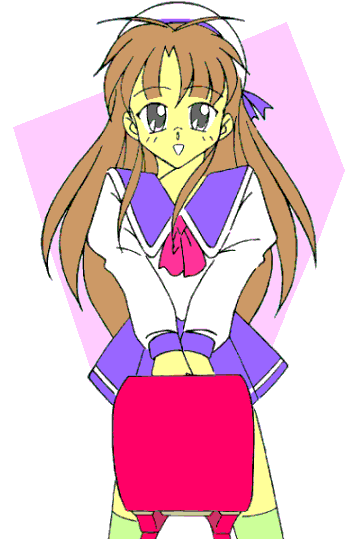
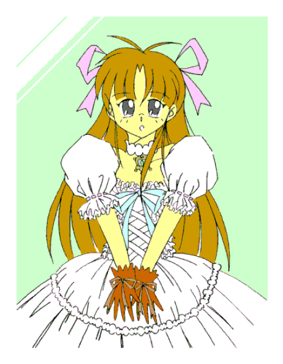

——萌え燃えっ！ 白塁学園高校女子ロボＴＲＹ部 ＥＸ４——
ＨＥＲＯ美少女変身騒動っ（後編）
・・・あるいは、「女美川ヤマト 新たなる旅立ち（笑）」
ＣＲＥＡＴＥＤ ＢＹ ＭＯＮＤＯ
| 【前編のあらすじ】
スーパーメガパペット（競技用有脚マニピュレーター）《バンガイオーＲＶ３》を駆って白塁学園高校の自由と平和を守る女美川ヤマト。 だが、悪のメガパペット・プレイヤー藤原ほのかの魔の手にかかり、彼は「小早川なでしこ」という名の少女に強制転生させられてしまう。 小学生の女の子として暮していくうちに、徐々に精神——人格さえも少女化していくヤマト。 しかし、盟友飯綱甲介との出会いによって再びヒーローとしての自我を取り戻した彼は、愛機とともに今、最後の戦いに挑むっ！！
|



|
とうとういきつくところまで逝って……もとい、いってしまった（？）ヤマト（なでしこ）。
はたしてこのまま、彼——彼女は身も心も恋する乙女と化してしまうのかっ！？ ……というわけで、結末は「完結編」にこうご期待！！ ………… してよね、お願いだから（涙）。 |
□ 感想はこちらに □